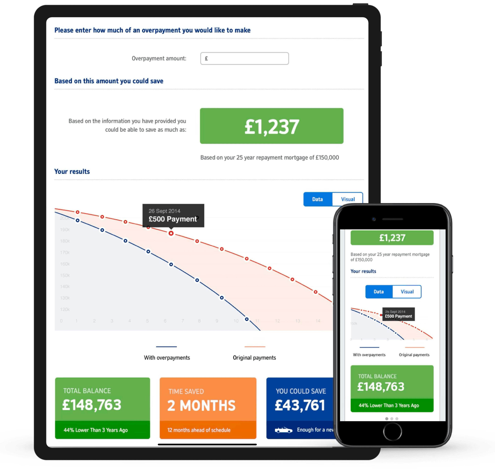

Transforming complex data into clear, actionable intelligence

Worked with Sophos Labs to design a suite of data intelligence reports — synthesising outputs from data lakes, machine learning models, and labs algorithms into clear, scannable interfaces. The challenge was significant: translate deeply technical, data-dense information into experiences that could be understood and acted upon by users across every level of cybersecurity maturity — from frontline SOC analysts to executive stakeholders with limited technical knowledge.
Sophos Labs' threat intelligence data was rich and valuable, but the raw outputs were too technically dense for most users to interpret without expertise. Decision-making was being slowed by a lack of clear data presentation.
Existing reports didn't account for the wide range of user maturity levels. Content meaningful to a security analyst was impenetrable to a business decision-maker — and vice versa.
Began by working closely with Sophos Labs to understand the data sources — including data lakes, machine learning outputs, and algorithm-generated insights. Simultaneously, conducted research with users across different maturity levels to understand how they consumed threat intelligence and what decisions they needed to make.
Mapped the full spectrum of user types by cybersecurity maturity — from highly technical SOC analysts to executive stakeholders — identifying what each group needed to understand, act on, and communicate to others.
Established a clear information hierarchy for each report type — surfacing the most critical insights at a glance, with progressive disclosure allowing more technical users to dig deeper into the underlying data.
Used Axure to build detailed, interactive prototypes of the report interfaces — testing comprehension with users at different maturity levels to ensure the designs worked across the full spectrum.
Developed a clear visual design language for data presentation — using colour, typography, and iconography to signal severity, status, and priority at a glance. Ensured the language was consistent across all report types.
Designed reports with layered information architecture — a clear summary view for executives, with expandable detail sections for technical users who needed to go deeper.
The new report designs significantly improved comprehension across the full range of user maturity levels — from executive summaries that communicated risk clearly without technical jargon, to detailed analyst views that surfaced actionable threat intelligence efficiently.
By designing data hierarchies that surfaced the most critical insights at a glance, users across all levels were able to make faster, more informed decisions — reducing the time spent interpreting raw data.
The design patterns and visual language established for the Sophos Labs intelligence suite provided a scalable foundation for future data products — enabling new report types to be built with consistency and clarity from the outset.